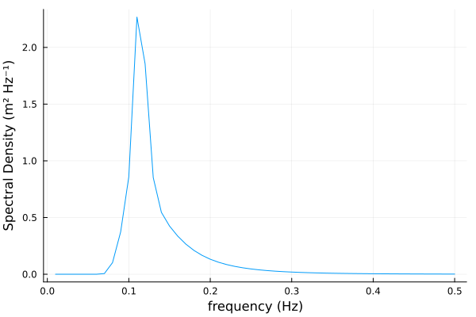
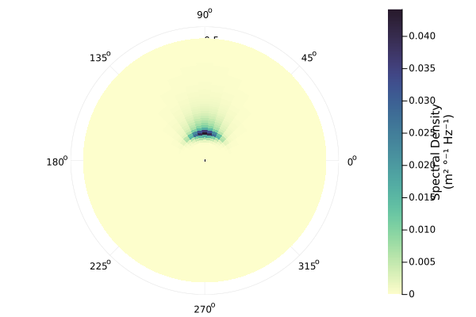
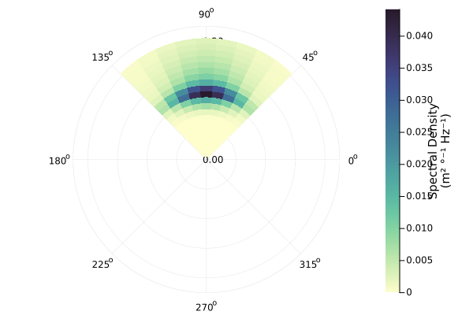
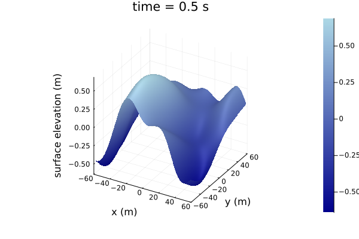
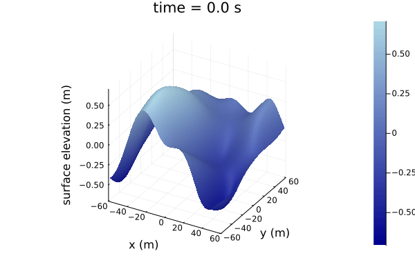

Quickstart
julia> using WaveSpectra, WaveRealizations, Plots
julia> f̅ = (0.01:0.01:0.5)*Hz
(0.01:0.01:0.5) Hz
julia> Hₛ=1.2m; fₑ=0.125*Hz; γ=3.3;
julia> S₀ = ParametricSpectra.spectrum_jonswap(f̅, Hₛ, fₑ, γ)
50-element OmnidirectionalSpectrum{m² Hz⁻¹}{Hz}
Spectral density of the quantity (m²):
• Axis: Frequency (Hz)
and data(m² Hz⁻¹):
0.0
0.0
1.5465133781175455e-106
1.4125244620059736e-32
1.1154358690894819e-12
⋮
0.0023274934072044975
0.002090985532205476
0.001882696896258923
0.0016987833490766532
0.0015359864602957083
julia> θ̅ = (0°:10°:360°)[begin:end-1]
(0:10:350)°
julia> θₘ = 90°
90°
julia> spread = 20°
20°
julia> D = ParametricSpectra.spread_cartwright(θ̅, f̅, θₘ, spread);
julia> S = Spectrum(S₀, D);julia> plot(S₀)
julia> plot(S)
julia> S_sub = Spectrum(S[frequency=0Hz..0.2Hz, direction=45°..135°])
plot(S_sub)
julia> Ã = ComplexAmplitudes(S_sub)
20×9 ComplexAmplitudes{m}{Hz}{°} with polar coordinates and axes:
:frequency: [0.01 Hz, 0.02 Hz, 0.03 Hz, …, 0.18 Hz, 0.19 Hz, 0.2 Hz]
:direction: [50°, 60°, 70°, …, 110°, 120°, 130°]
and data:
(-0.0 - 0.0im) m (0.0 + 0.0im) m … (-0.0 + 0.0im) m
(0.0 + 0.0im) m (0.0 + 0.0im) m (0.0 - 0.0im) m
(-1.4981720392028432e-55 + 1.5778678345789137e-55im) m (-8.068406374775923e-56 - 6.1298873482541614e-55im) m (4.676917572507604e-55 + 7.437170463693094e-56im) m
(1.4316413238076151e-18 + 1.1826620513743503e-18im) m (3.3929594376035634e-18 - 3.920609914179629e-18im) m (2.288493960379759e-18 + 6.867217691524955e-18im) m
(1.1423391669169332e-8 + 4.766264922824094e-8im) m (1.2180518959292201e-8 + 1.21971664293489e-8im) m (-6.924032775809924e-9 + 1.7729482186560884e-8im) m
⋮ ⋱
(-0.0074060935975469476 + 0.00992149158242508im) m (-7.773459440711394e-6 + 0.011366785937089171im) m … (-0.011269555144007437 + 0.005644807730110364im) m
(0.006062775476681223 - 0.007226157482580645im) m (0.01597174120546653 - 0.0013851067700407355im) m (0.00762179470989061 - 0.02400591718351112im) m
(0.008878687327979867 + 0.0030080319346582444im) m (0.00559048517277156 - 0.026644131776252217im) m (0.008659553587462246 - 0.011721385360810332im) m
(-0.006305202632985642 + 0.0016398260108754187im) m (0.005141340548080684 + 0.006535731524371749im) m (-0.0026329369816287178 - 0.00031477445490963696im) m
(0.005499920722200309 - 0.00020431212260296587im) m (0.003887577111590438 - 0.010622937132009614im) m (0.015073961483072152 + 0.0055076688563272976im) m
julia> time = (0:0.5:20)s
(0.0:0.5:20.0) s
julia> x = y = (-1:0.01:1)*60m
(-60.0:0.6:60.0) m
julia> dispersion = DispersionRelations.gravitywaves_deepwater();
julia> η = WaveRealizations.WaveSurface(Ã; x, y, time, dispersion)
201×201×41 WaveSurface{m} with axes:
:x: [-60.0 m, -59.4 m, -58.8 m, …, 58.8 m, 59.4 m, 60.0 m]
:y: [-60.0 m, -59.4 m, -58.8 m, …, 58.8 m, 59.4 m, 60.0 m]
:time: [0.0 s, 0.5 s, 1.0 s, …, 19.0 s, 19.5 s, 20.0 s]
and data:
201×201×41 Array{Unitful.Quantity{Float64, 𝐋, Unitful.FreeUnits{(m,), 𝐋, nothing}}, 3}:
[:, :, 1] =
-0.418036 m -0.412518 m -0.406116 m -0.398832 m -0.390666 m -0.381625 m -0.371714 m -0.360943 m … -0.338869 m -0.332049 m -0.325697 m -0.319874 m -0.314636 m -0.310031 m
-0.424789 m -0.419117 m -0.41254 m -0.40506 m -0.396681 m -0.387411 m -0.377257 m -0.36623 m -0.342413 m -0.335336 m -0.328704 m -0.322578 m -0.317017 m -0.312069 m
-0.431535 m -0.425712 m -0.418963 m -0.411292 m -0.402703 m -0.393207 m -0.382812 m -0.371532 m -0.345869 m -0.338528 m -0.331608 m -0.325172 m -0.319279 m -0.313982 m
-0.438263 m -0.432294 m -0.425376 m -0.417516 m -0.408722 m -0.399002 m -0.388371 m -0.376841 m -0.349236 m -0.341624 m -0.334408 m -0.327655 m -0.321424 m -0.315769 m
-0.444963 m -0.438851 m -0.431769 m -0.423725 m -0.414727 m -0.404789 m -0.393923 m -0.382147 m -0.352514 m -0.344623 m -0.337106 m -0.330028 m -0.323452 m -0.317432 m
⋮ ⋮ ⋱ ⋮ ⋮
-0.106858 m -0.113457 m -0.120363 m -0.127503 m -0.134798 m -0.142171 m -0.149545 m -0.156841 m -0.0155581 m -0.0317647 m -0.047579 m -0.0628848 m -0.0775687 m -0.0915209 m
-0.106274 m -0.112882 m -0.119783 m -0.126904 m -0.134167 m -0.141497 m -0.148816 m -0.156048 m -0.013693 m -0.0299106 m -0.0457313 m -0.0610379 m -0.0757162 m -0.0896559 m
-0.105806 m -0.112416 m -0.119306 m -0.1264 m -0.133624 m -0.140902 m -0.148157 m -0.155315 m -0.0118088 m -0.0280337 m -0.0438573 m -0.0591615 m -0.0738313 m -0.0877556 m
-0.10545 m -0.112058 m -0.118929 m -0.125991 m -0.133168 m -0.140386 m -0.14757 m -0.154645 m -0.00990588 m -0.0261346 m -0.0419577 m -0.0572564 m -0.0719148 m -0.0858211 m
-0.105203 m -0.111804 m -0.118652 m -0.125675 m -0.132799 m -0.13995 m -0.147055 m -0.154039 m … -0.00798463 m -0.0242137 m -0.0400331 m -0.0553233 m -0.0699675 m -0.0838534 m
...
[:, :, 41] =
-0.450506 m -0.444073 m -0.437151 m -0.429806 m -0.422104 m -0.414108 m -0.405879 m -0.397478 m … -0.0562361 m -0.0775108 m -0.0992185 m -0.121301 m -0.143697 m -0.166342 m
-0.449837 m -0.443094 m -0.435863 m -0.428213 m -0.420212 m -0.411925 m -0.403418 m -0.394752 m -0.0545046 m -0.0754771 m -0.0968812 m -0.118661 m -0.140757 m -0.163107 m
-0.449115 m -0.442069 m -0.434535 m -0.426585 m -0.41829 m -0.409718 m -0.400938 m -0.392013 m -0.0528201 m -0.0734879 m -0.0945853 m -0.116058 m -0.137851 m -0.159901 m
-0.448344 m -0.441001 m -0.43317 m -0.424926 m -0.416343 m -0.407492 m -0.398445 m -0.389267 m -0.051185 m -0.0715461 m -0.0923342 m -0.113498 m -0.134982 m -0.15673 m
-0.447528 m -0.439893 m -0.431771 m -0.42324 m -0.414376 m -0.405253 m -0.395945 m -0.386521 m -0.0496013 m -0.0696542 m -0.0901312 m -0.110983 m -0.132157 m -0.153597 m
⋮ ⋮ ⋱ ⋮ ⋮
0.0360839 m 0.0104674 m -0.0149342 m -0.0400306 m -0.0647326 m -0.088953 m -0.112607 m -0.135613 m 0.0441244 m 0.0342064 m 0.0242652 m 0.0143473 m 0.00450005 m -0.00522961 m
0.0358114 m 0.0104224 m -0.0147406 m -0.0395886 m -0.0640335 m -0.0879896 m -0.111374 m -0.134105 m 0.0467316 m 0.0367118 m 0.0266649 m 0.0166394 m 0.00668423 m -0.0031518 m
0.0355154 m 0.010361 m -0.0145563 m -0.0391485 m -0.0633292 m -0.0870139 m -0.110121 m -0.132571 m 0.0493758 m 0.0392577 m 0.0291086 m 0.018979 m 0.00891948 m -0.00101935 m
0.0352024 m 0.0102893 m -0.0143756 m -0.0387054 m -0.0626151 m -0.0860215 m -0.108844 m -0.131007 m 0.0520518 m 0.0418391 m 0.0315917 m 0.0213619 m 0.0112021 m 0.00116446 m
0.0348792 m 0.0102135 m -0.0141926 m -0.0382537 m -0.0618862 m -0.0850083 m -0.107541 m -0.12941 m … 0.054754 m 0.044451 m 0.0341097 m 0.023784 m 0.0135282 m 0.00339623 m
julia> plot(η[time=0.5s])
julia> surface_gif(η)